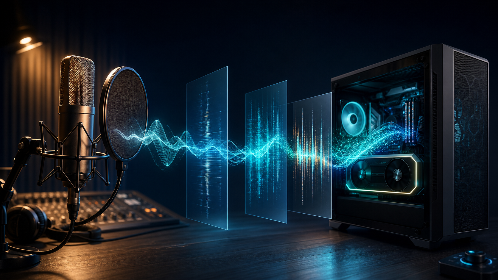

curated_01_fish_conversation
短い会話文で自然さが出やすかった代表例。
おはようございます。昨日送っていただいた資料、先ほど確認しました。
round2_ref8s
Zenn記事「日本語ボイスクローン6モデル比較: Irodori-TTS/Qwen3-TTS/Fish Speech等を音響分析」の補助ページです。同一文のモデル比較、公開用に選抜した生成音声、Irodori-TTS 600M VoiceDesignで生成したEV発表スピーチ抜粋を試聴できます。
loudnorm=I=-18:TP=-1.5:LRA=11 で試聴音量をそろえ、MP3 160kbpsへエンコードしています。分析本文で扱った音響指標は、原則として元WAVを対象にしています。
各ブロックの左側に評価文を置き、右側に同じ文を各モデルで生成した音声を並べています。元録音は公開版から除外しています。
はい、では次に、数字と固有名詞を含む文章をもう一度確認しましょう。
RTX 5060 Ti、VRAM 16GB、CUDA、Python、PyTorch を確認します。
これは説明動画の冒頭で使う、落ち着いた読み上げの文章です。
生き物の声と、生ビールの注文では、生の読み方が変わります。
良好例、ナレーション、技術語・数字を含む難例、プレゼン文を少数に絞って追加しました。すべて生成済みWAVを元にMP3化し、同じラウドネス設定で正規化しています。
短い会話文で自然さが出やすかった代表例。
おはようございます。昨日送っていただいた資料、先ほど確認しました。
生成速度と品質のバランスがよかった短文例。
おはようございます。昨日送っていただいた資料、先ほど確認しました。
短文では声質と明瞭さが比較的安定した例。
おはようございます。昨日送っていただいた資料、先ほど確認しました。
初期検証より違和感が減った改善後の短文例。
おはようございます。昨日送っていただいた資料、先ほど確認しました。
声質は近いが抑揚に注意が必要なモデルの短文例。
おはようございます。昨日送っていただいた資料、先ほど確認しました。
長めの説明文で間と語尾を確認するための例。
静かな部屋で、録音ランプがゆっくりと点灯しました。
マイクの前に座り、息を整え、最初の一文を読み始めます。声は少し低く、落ち着いていて、聞き手が内容を追いやすい速度を保っています。
このナレーションでは、間の取り方、語尾の余韻、そして長い文章を読んだときの安定感を確認します。
Qwen3の抑揚と長め文章の安定性を見る例。
静かな部屋で、録音ランプがゆっくりと点灯しました。
マイクの前に座り、息を整え、最初の一文を読み始めます。声は少し低く、落ち着いていて、聞き手が内容を追いやすい速度を保っています。
このナレーションでは、間の取り方、語尾の余韻、そして長い文章を読んだときの安定感を確認します。
内容保持は悪くないが、抑揚の癖を確認する例。
静かな部屋で、録音ランプがゆっくりと点灯しました。
マイクの前に座り、息を整え、最初の一文を読み始めます。声は少し低く、落ち着いていて、聞き手が内容を追いやすい速度を保っています。
このナレーションでは、間の取り方、語尾の余韻、そして長い文章を読んだときの安定感を確認します。
長い技術語・数字で破綻しやすい傾向を示す例。
二千二十六年 六月 十五日 時点で、Windows 環境における GPU 推論、CPU 推論、API サーバー化の可否を確認します。
検証対象には、エヌティーティードコモ、オラクル エクサデータ、グーグル クラウド スパナー、アマゾン ダイナモ ディービー、マイクロソフト アジュール、エヌビディア ジーフォース アールティーエックス よんぜろななぜろ、クーダ じゅうに てん ろく、パイソン さん てん じゅう が含まれます。
売上は、ひゃくにじゅうさんまん よんせん ごひゃく ろくじゅうなな円。達成率は、きゅうじゅうはち てん ななパーセント。受付時間は、午前 九時 三十分から、午後 六時 十五分までです。
URLは、エイチティーティーピーエス、コロン、スラッシュ、スラッシュ、イグザンプル ドット コム、スラッシュ、ドックス、スラッシュ、ティーティーエス、ハイフン、チェックリストです。
数字・英字・サービス名を含む長文での安定性を見る例。
二千二十六年 六月 十五日 時点で、Windows 環境における GPU 推論、CPU 推論、API サーバー化の可否を確認します。
検証対象には、エヌティーティードコモ、オラクル エクサデータ、グーグル クラウド スパナー、アマゾン ダイナモ ディービー、マイクロソフト アジュール、エヌビディア ジーフォース アールティーエックス よんぜろななぜろ、クーダ じゅうに てん ろく、パイソン さん てん じゅう が含まれます。
売上は、ひゃくにじゅうさんまん よんせん ごひゃく ろくじゅうなな円。達成率は、きゅうじゅうはち てん ななパーセント。受付時間は、午前 九時 三十分から、午後 六時 十五分までです。
URLは、エイチティーティーピーエス、コロン、スラッシュ、スラッシュ、イグザンプル ドット コム、スラッシュ、ドックス、スラッシュ、ティーティーエス、ハイフン、チェックリストです。
内容保持と抑揚の両方を確認するための長文例。
二千二十六年 六月 十五日 時点で、Windows 環境における GPU 推論、CPU 推論、API サーバー化の可否を確認します。
検証対象には、エヌティーティードコモ、オラクル エクサデータ、グーグル クラウド スパナー、アマゾン ダイナモ ディービー、マイクロソフト アジュール、エヌビディア ジーフォース アールティーエックス よんぜろななぜろ、クーダ じゅうに てん ろく、パイソン さん てん じゅう が含まれます。
売上は、ひゃくにじゅうさんまん よんせん ごひゃく ろくじゅうなな円。達成率は、きゅうじゅうはち てん ななパーセント。受付時間は、午前 九時 三十分から、午後 六時 十五分までです。
URLは、エイチティーティーピーエス、コロン、スラッシュ、スラッシュ、イグザンプル ドット コム、スラッシュ、ドックス、スラッシュ、ティーティーエス、ハイフン、チェックリストです。
H4n Pro録音後のプレゼン文で、自然さを確認する例。
本日は、ローカル環境で日本語音声合成を検証した結果を共有します。まず、録音条件と評価の観点を整理します。
Irodoriの実用速度でプレゼン文を試した例。
本日は、ローカル環境で日本語音声合成を検証した結果を共有します。まず、録音条件と評価の観点を整理します。
5分程度の架空EV発表スピーチから、トーン差が出やすい箇所を選抜しました。
皆さま、本日はアステリア・モーターズの新車発表会にお越しいただき、誠にありがとうございます。
その名は、アステリア・ルーメン。光を意味する名前のとおり、これからの暮らしを静かに照らすために生まれました。
アクセルを踏んだ瞬間の反応は鋭く、それでいて唐突ではありません。街中でも高速道路でも、扱いやすい加速を実現しました。
ドライブモードは、コンフォート、レンジ、スポーツの三種類です。スポーツでは、車体が一段引き締まったように反応します。
このあと、ステージ左手のスクリーンで、実際の走行映像をご覧いただきます。加速、静粛性、そして回生ブレーキにご注目ください。
ここまで支えてくださった開発チーム、協力会社の皆さま、そして待ってくださったお客様に、改めて感謝いたします。
ここで改めて、アステリア・ルーメンを皆さまにお見せします。静かに、力強く、そして美しく走る、新しい電気自動車です。
重ねて、本日はありがとうございました。アステリア・ルーメンとともに、静けさの先へ進む旅を、ぜひご一緒ください。